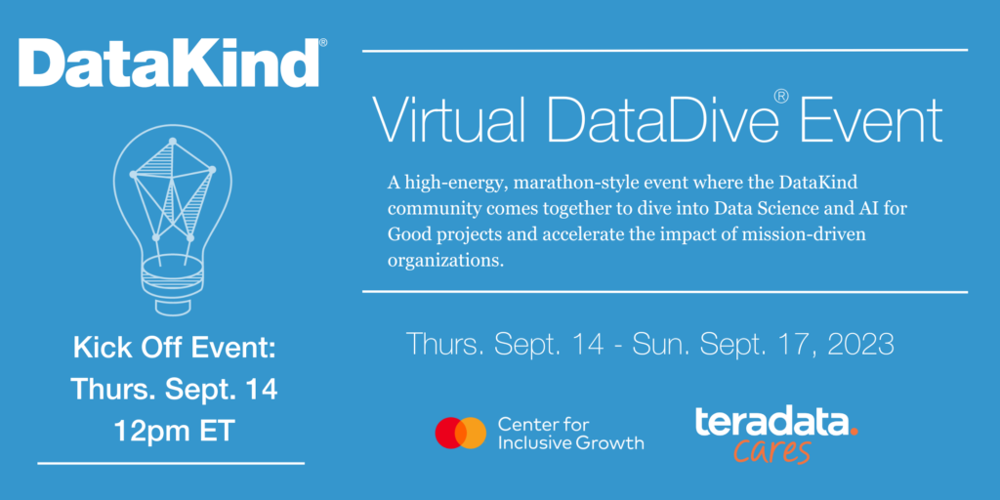

Unveiling the Potential of Data Science in Bridging Gender Data Gaps
Gender equality is not just a moral imperative but a catalyst for sustainable economic progress. The integration of gender perspectives into economic policies is gaining momentum globally, with entities like the International Monetary Fund (IMF) leading the charge. However, a significant roadblock remains: the scarcity of gender-disaggregated data. This data is vital to understand women's roles in various economic sectors, their participation in unpaid and informal work, and their unique consumption and production patterns.
Recognizing these gaps, initiatives are emerging to collect and analyze gender-specific data, akin to efforts like the G20 Data Gap Initiative (DGI) for climate change. Yet, the lack of detailed, harmonized, micro-level gender data is a persistent challenge, especially when evaluating the household impacts of economic changes. Understanding these impacts requires precise data, from assessing the effects of price shifts, like fuel subsidy reforms, to analyzing their varying effects on different income levels.
Proposed Objectives and ApproachesThe primary goal for the DataDive event is to harmonize household expenditure surveys across as many IMF member countries as possible. While the primary objective is to collect data for the fuel-subsidy tool, the detailed expenditure data obtained can serve multiple purposes, including the analysis of price fluctuations due to either policy changes or inflations. This necessitates the collection of data from diverse sources, including national accounts and household surveys. The fuel-subsidy tool is adaptable to either individual- or household-level data, depending on the data availability within each country.
The project's goal is to consolidate a comprehensive dataset from various nations, creating a Global Gender Economic Data Repository. This repository will not only facilitate high-quality official statistics but also enable policy-relevant analytical research into gender inequality, including the gender-differentiated impact of tax and subsidy reforms.
Overcoming Sources and ChallengesWhile harmonized household-level surveys are available from sources like IPUMS and the World Bank Microdata Library, gender-disaggregated data, especially on consumption patterns, is scarce. The diversity in survey layouts, expenditure reporting, and languages across countries poses a significant challenge.
For instance, in Mexico, the expenditure variables are far more detailed than in Brazil, showcasing the variability and complexity of the data. This diversity necessitates sophisticated algorithms to process and extract information efficiently and accurately.
Tackling the Language BarrierA key task in this project is translating survey data and metadata from multiple languages. Initially, I developed a Python code using the Google Translate library to translate metadata from Spanish to English. This approach was successful for translating about 80% of the metadata. However, abbreviations and shorthands posed a challenge, requiring manual intervention.
Innovations in Data ExtractionOne of the most daunting tasks was extracting metadata from a 900-page PDF document in French for Senegal. To tackle this, I turned to Azure cloud computing, employing OpenAI embeddings and the Langchain library to tokenize and vectorize the PDF. This process was facilitated by the Faiss library, allowing efficient similarity search and clustering of dense vectors.
Subsequently, I developed a Streamlit chatbot web app, enabling users to upload PDFs for metadata extraction. The chatbot, powered by OpenAI, delivered conversational responses, pinpointing the relevant metadata. An added feature allowed users to view the specific pages of the document corresponding to the search results, streamlining the data extraction process.
Expanding the Scope: Building an Automated Metadata PipelineThis work on metadata extraction and translation is just one component of a larger, more ambitious endeavor. Our objective is to create a streamlined, automated pipeline that not only extracts metadata from various sources but also converts this extracted data into a standardized JSON format. This automation is crucial for handling the vast amounts of data we encounter, ensuring efficiency and accuracy in our processes.
The Automation Pipeline: From Extraction to HarmonizationThe process begins with the automated extraction of metadata from diverse documents, including complex PDFs from various countries. This step, powered by advanced language processing and machine learning algorithms, ensures that even the most intricate and language-specific nuances are captured accurately.
Once the metadata is extracted and converted into a JSON file, it enters the next critical phase of our pipeline. Here, the extracted metadata is meticulously matched with a universal metadata structure. This harmonization is pivotal, as it allows us to integrate and compare data across many countries, despite the inherent differences in data collection and reporting methods.
The End Goal: A Harmonized Global DatasetThe ultimate aim of this pipeline is to create a harmonized dataset that transcends geographical and linguistic barriers. By standardizing metadata from a multitude of countries, we are building a foundation for comprehensive, cross-national analysis. This harmonized dataset is not just a collection of numbers; it represents a unified language of data that speaks to the economic and social realities of different genders across the globe.
Conclusion: A Future of Inclusive Policy DevelopmentThe DataDive project illustrates the incredible potential of data science in addressing complex global issues. By leveraging advanced technologies and collaborative efforts, we are paving the way for more inclusive and effective economic policies, grounded in a thorough understanding of gender dynamics. This project is not just about collecting data; it's about reshaping our approach to economic policy through the lens of gender equality.